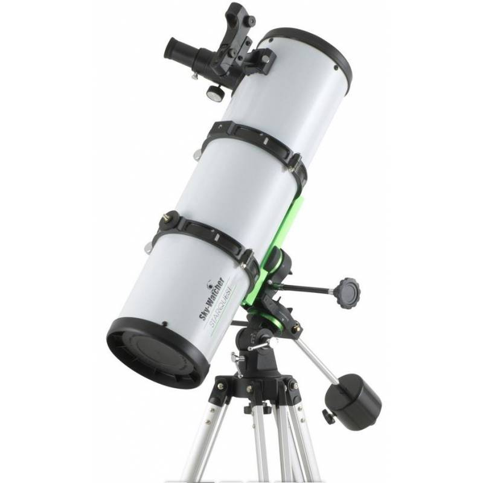
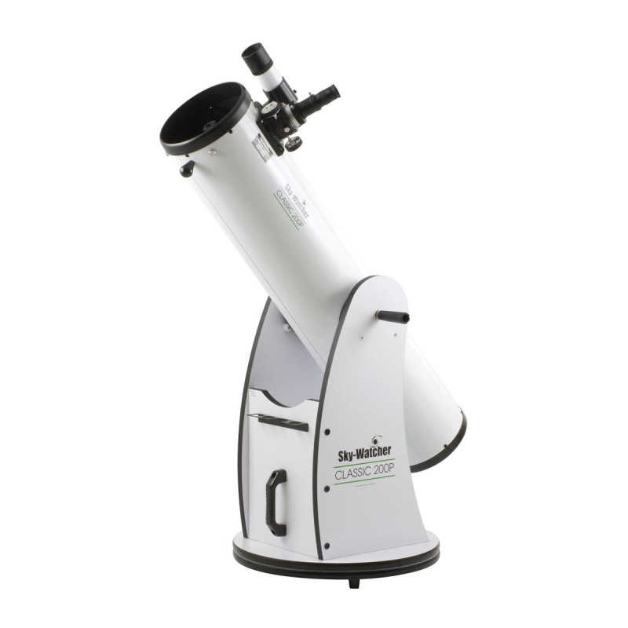
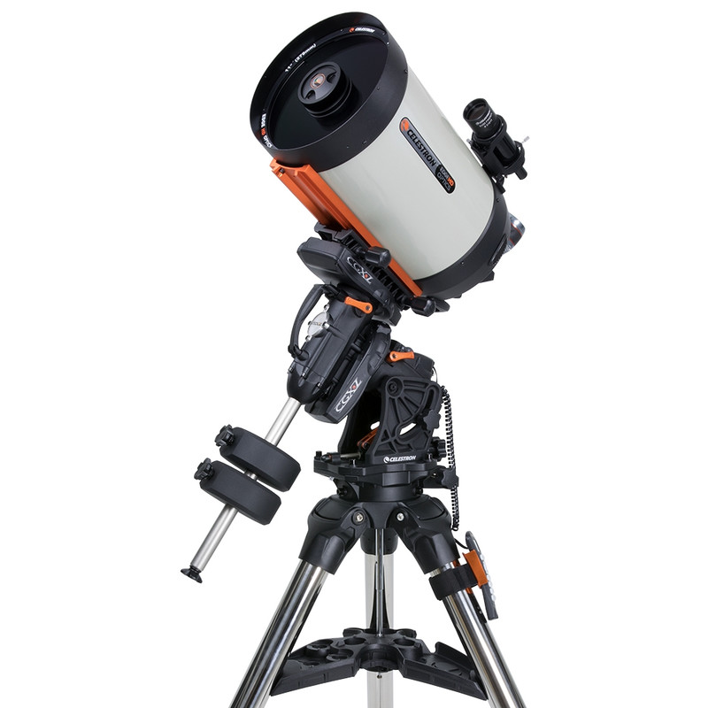
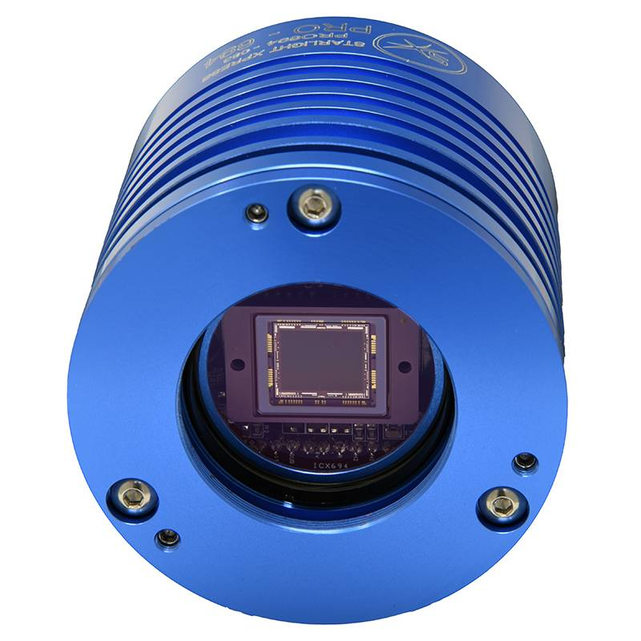
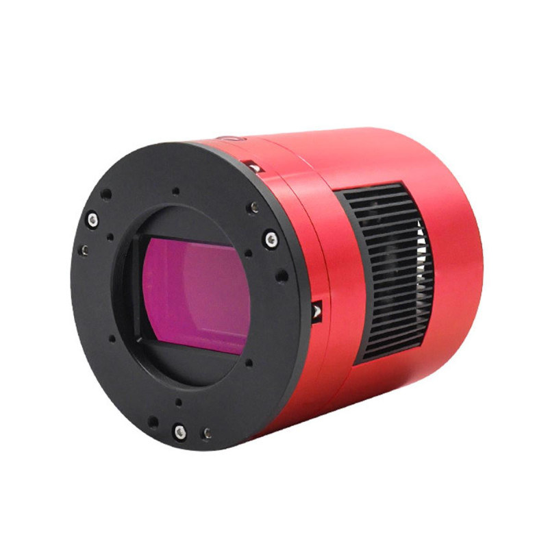
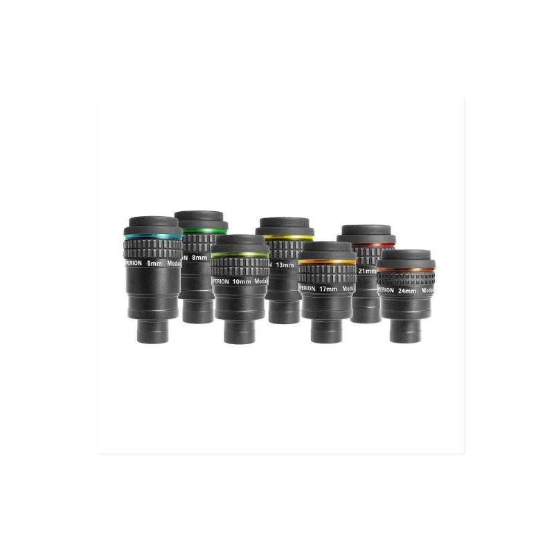
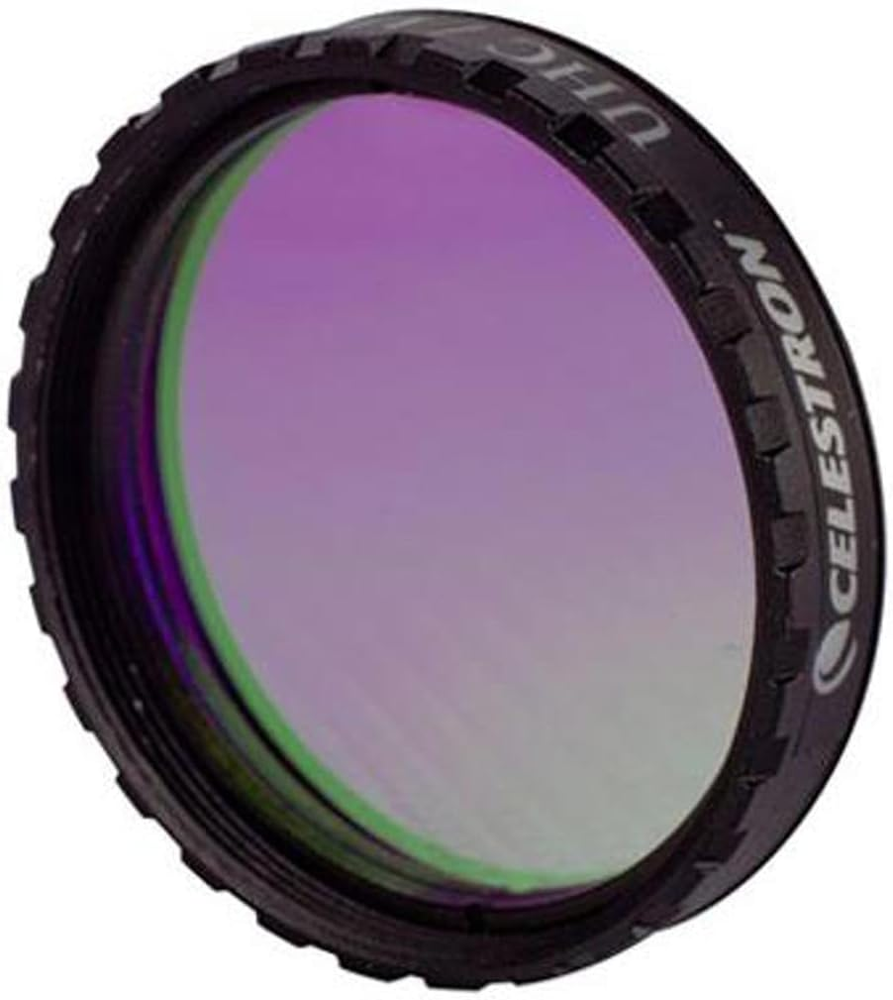
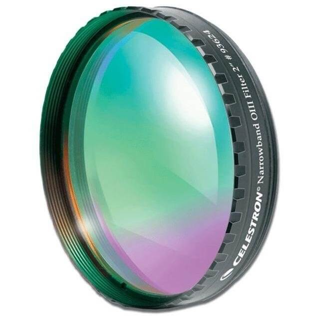

Télescopes

Newton 200/1000
Télescope Newton, ouverture 200 mm, focale 1000 mm. Idéal planètes.

Dobson
Pratique et mobile, parfait pour débutants.

Lunette 82/500
Ouverture 82 mm, focale 500 mm, idéale pour objets ciel profond.

Schmidt-Cassegrain
Télescope à fort grossissement.
Caméras astronomiques

Caméra CCD
Excellente sensibilité, faible bruit, idéale ciel profond.

Caméra CMOS
Polyvalente, parfaite pour photo planétaire et détails fins.
Oculaires

Oculaire
Grand champ, parfait pour ciel profond et Voie Lactée.
Filtres

Filtre UHC
Améliore contraste nébuleuses, réduit pollution lumineuse.

Filtre OIII
Met en valeur émissions d’oxygène doublement ionisé.